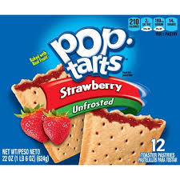

- When was the first Pop-Tart released?
- The first official Pop-Tarts were released in 1964, though, they were unfrosted.
- What were the first flavors?
- The first flavors were strawberry, blueberry, brown sugar cinnamon, and apple currant.
- When were the first frosted poptarts introduced?
- They were introduced in 1967.
- Who founded the Poptart brand?
- A man named Kellogg.
- How did they pick the name Poptarts?
- It was inspired by an artist named Andy Warhol. A pop-art artist.

